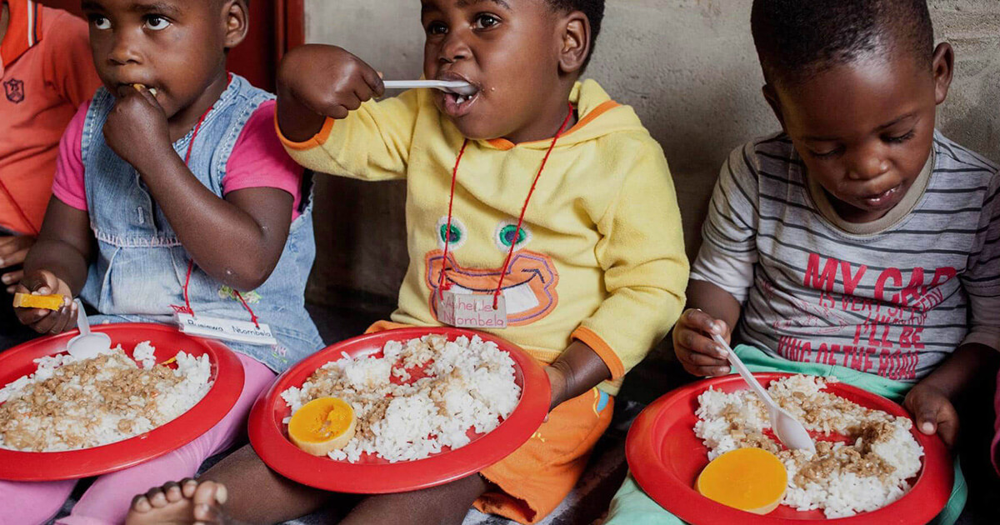

We encourage children to become responsible. We nurture children’s interest based on the choices and make learning fun. Give alternates to the schools we visit to approach teaching differently in customizable ways so that children can enjoy being in schools. Teach the children their rights and how they should be properly brought up. Arrange parents meetings so that they can assist their kids leaning and inspire them to think independently and be more receptive. We provide clothing with the help of other organizations such as Jupiter Clothes and the government. We also give away food to schools such as Sedibeng primary school, and travel around townships and villages to contribute child care and protection.
What We Do
We play part in children having quality education, care and progress in their early childhood. With youngsters having access to sustainable development we will be of help to the commitment that South Africa made to the UN that by 2030 all boys and girls will have decent education and care.
We equip women and men to be leaders in their societies and to be eligible to teachers to the children and impact their education. Nutrition and psycho-social is promoted to reduce poverty and social inequality.
Table Below show schools and visitations
| School Name | Level of Education | Visits |
|---|---|---|
| Sedibeng | Primary | 350 |
| Lesiba | High | 94 |
| Boksburg | High | 80 |
| Benoni | Primary | 80 |
